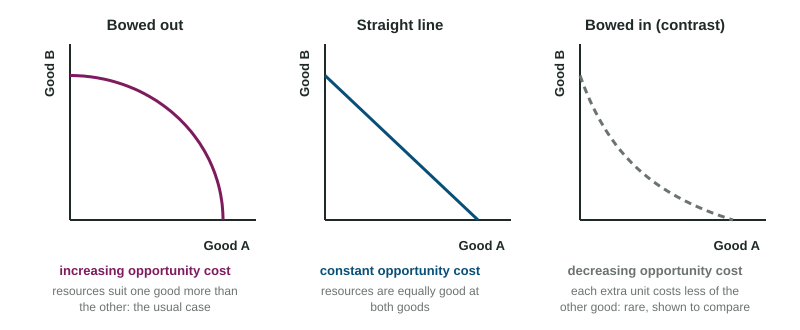

Hollis Farm has its fields, six workers and two tractors. Each season it chooses how much corn and how many beans to plant. If it plants only corn it grows 4.4 truckloads of corn and no beans; if it plants only beans it grows 20 truckloads of beans and no corn. Every mix in between gives up some of one crop to get more of the other. One curve shows all the best mixes at once, and it carries most of the ideas of scarcity on a single graph.
The production possibilities curve
A production possibilities curve (PPC) shows the most of two goods a producer can make in a period when it uses all its resources efficiently with the methods it has. It holds two things fixed: the amount of resources (land, labor, capital, entrepreneurship) and the methods used to combine them. The producer can be one firm, like the farm, or a whole country. On the graph, one good goes on each axis, and both axes are labeled with the good's name and units.

The curve sorts every combination into three groups:
| Where the point is | What it means | In the figure |
|---|---|---|
| On the curve | productive efficiency: the most of one good given the amount of the other; no resources wasted | A, B, C, D, E |
| Inside the curve | inefficient: some resources are idle or poorly used; more of both is possible | U (2 corn, 10 beans) |
| Outside the curve | unattainable with today's resources and methods | Z (3 corn, 16 beans) |
The curve shows scarcity (points outside it are out of reach), trade-offs (moving along it, more of one crop means less of the other) and opportunity cost (how much of one crop each unit of the other costs).
Opportunity cost along the curve
Moving along the curve, the opportunity cost of one more unit of a good is the amount of the other good given up, divided by the amount gained:
Worked example: the farm's table. The combinations are A (0 corn, 20 beans), B (1, 19), C (2, 17), D (3, 13) and E (4, 6), in truckloads.
- A to B: 1 more corn, beans fall . Cost: 1 truckload of beans.
- B to C: beans fall . Cost: 2.
- C to D: beans fall . Cost: 4.
- D to E: beans fall . Cost: 7.
- Over a longer move, B to D: 6 beans given up for 2 corn, so beans per truckload of corn.
Two slips to avoid: reading the beans left over (13) instead of the beans given up (4), and dividing the wrong way. Put the good given up on top.
The shape tells you about the cost

The farm's costs rise from 1 to 2 to 4 to 7. That is increasing opportunity cost, and it bows the curve out from the origin. It happens because resources are not equally good at everything: the first fields switched to corn are the best for corn and the worst for beans, while the last fields switched are prime bean land. A bowed-out PPC is the usual case.
When resources are equally good at both goods, each unit costs the same: constant opportunity cost, and the PPC is a straight line. A tailor who can make 30 shirts or 10 jackets a week on a straight line gives up 3 shirts for every jacket, the first or the tenth. In the less common case where each extra unit costs less than the last, for example because a team gets faster with practice, the cost is decreasing and the curve bows in toward the origin.
Shifts: growth and decline
The whole curve moves when the things it holds fixed change. More resources (more land, more workers, more machines) or better technology (a new irrigation system, a better seed) let the producer make more of both goods: the curve shifts out. That is economic growth, and it is the only way to reach a point like Z. Losing resources, as when a flood washes away fields, shifts the curve in. Moving along the curve, or moving inside it by leaving workers idle, does not shift it.
Choices today also shape the curve later. A producer that gives up some consumer goods now to build machines adds to its capital, so its PPC shifts farther out in later years.